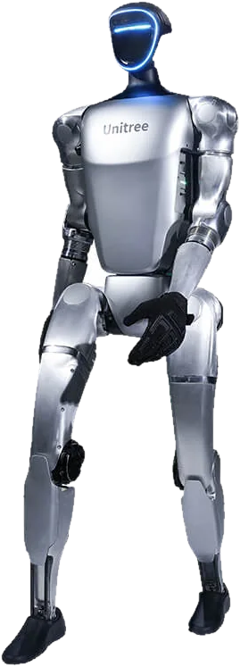
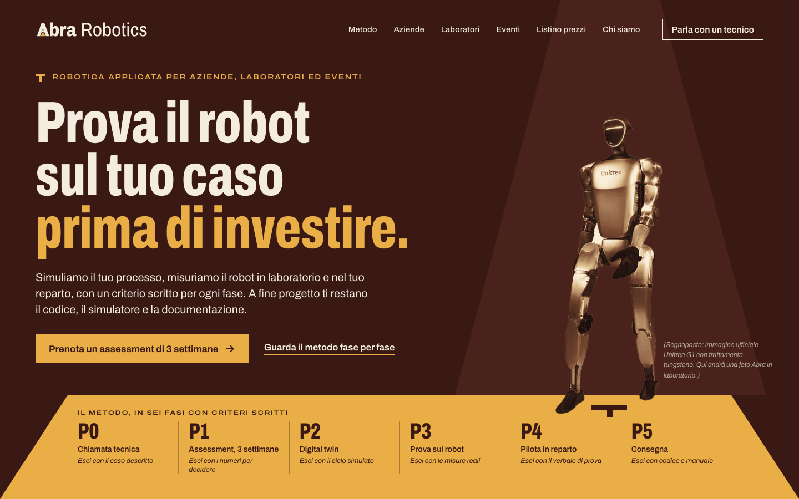
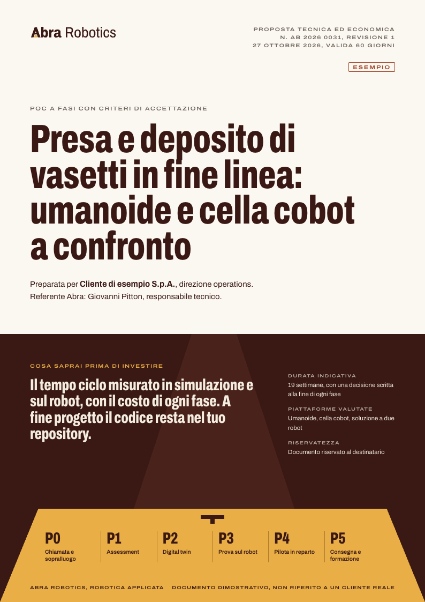
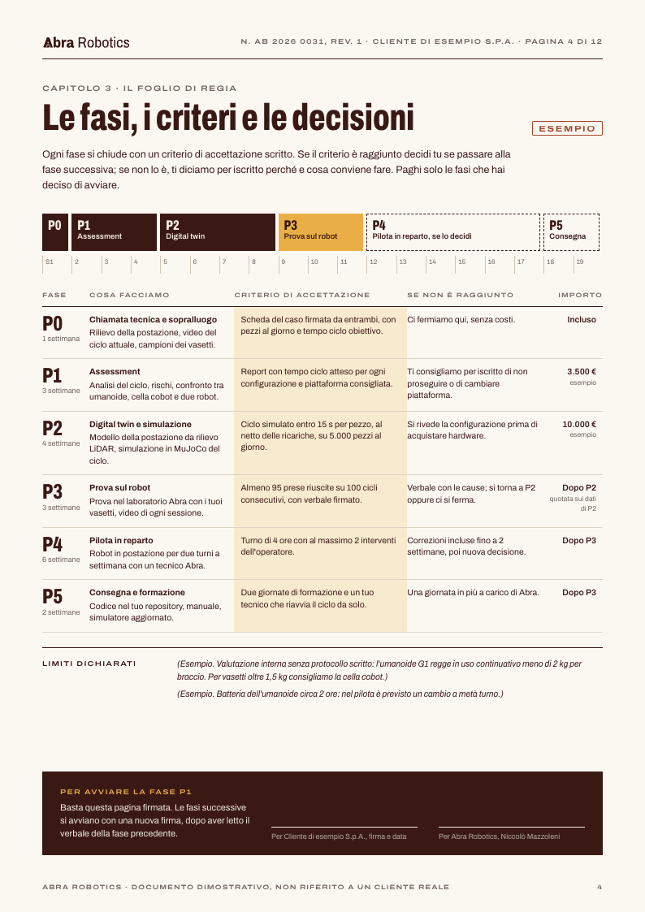
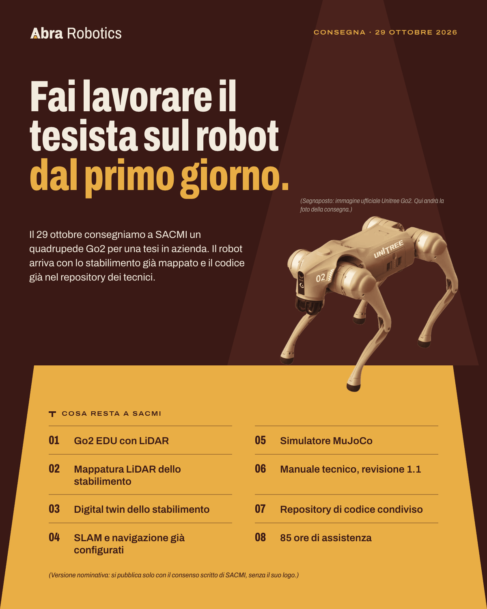
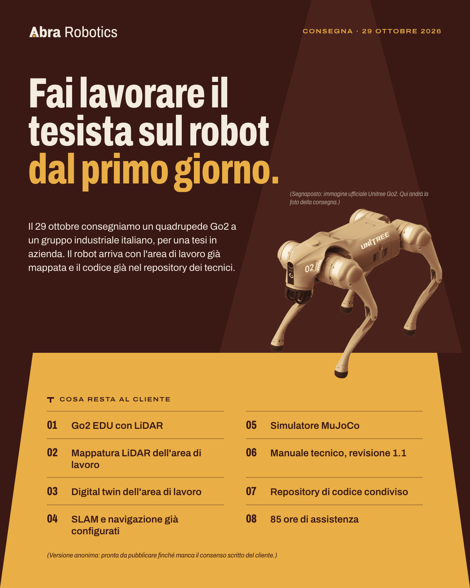
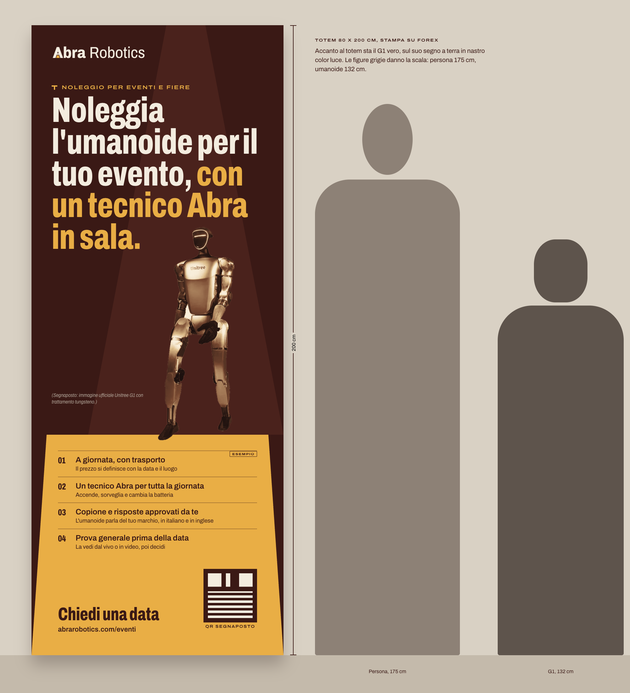
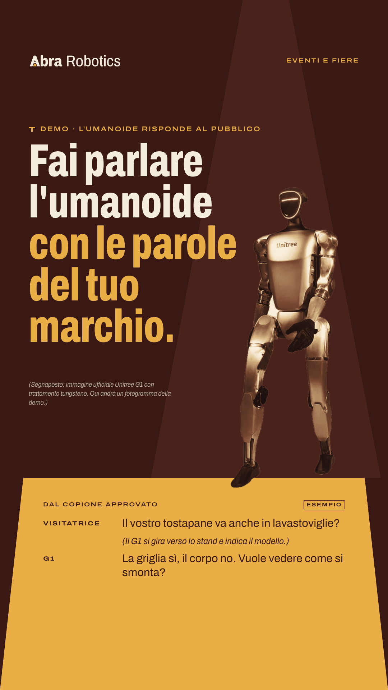
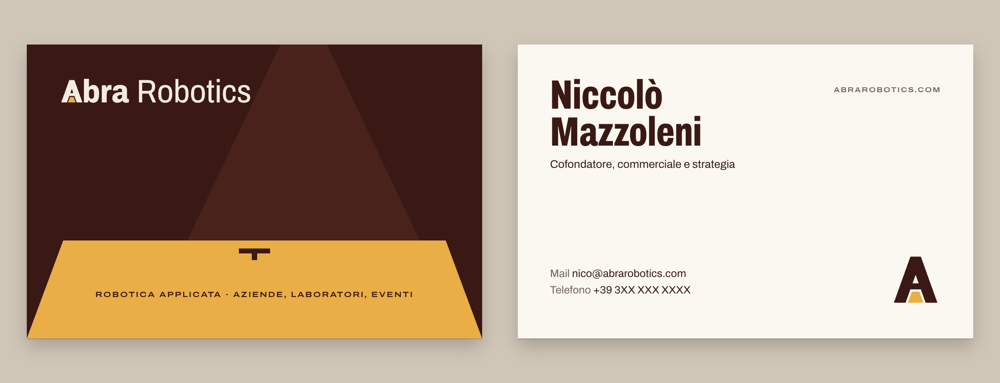
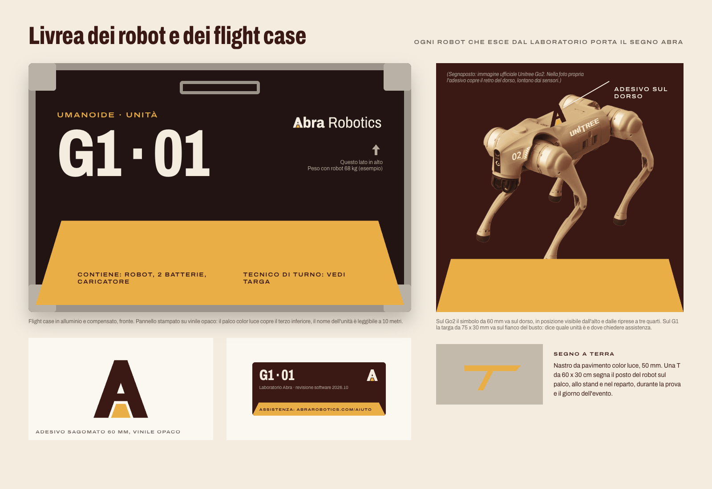

Prova
generale
Nessuno va in scena senza la prova generale. Abra tratta ogni robot allo stesso modo, e lo dice con una A che contiene un palco acceso.
Identità di marca, proposta allo studio27 ottobre 2026
Nessuno va in scena senza la prova generale. Abra tratta ogni robot allo stesso modo, e lo dice con una A che contiene un palco acceso.
01 · L'idea
In italiano "prova" è la verifica tecnica ed è anche la prova di uno spettacolo. Il posizionamento "Prima la prova" e il teatro chiedono la stessa cosa: ripetere tutto, con un copione scritto e i segni a terra, prima della sera in cui conta.
Il territorio chiede spettacolo senza perdere credibilità B2B. Dal teatro prendiamo la parte che chi lavora in fabbrica riconosce subito: la regia. Scaletta, foglio di regia, segni a terra, copione, didascalie, tecnico in sala. Lo spettacolo arriva da scala, taglio e luce vera. La credibilità arriva dal fatto che ogni cosa in scena è stata provata e messa per iscritto.
| Chi | La sua prova generale |
|---|---|
| Direttore R&D | Il POC a fasi: un numero misurato in simulazione e sul robot, con il costo di ogni fase, prima dell'investimento. |
| Laboratorio | Il robot arriva con SDK, ROS 2, simulatore e manuale: i tesisti partono dal primo giorno. |
| Event manager | Letteralmente la prova generale, con copione e base di conoscenza approvati prima della data. |
02 · Il marchio
Le gambe sono le quinte che convergono, il traverso è l'architrave, il trapezio color Luce è il palcoscenico acceso visto dalla platea.
Il simbolo è disegnato a mano su una griglia di parametri (apice, spessore della gamba, traverso, fuga del palco) e sostituisce la A del logotipo: "Abra" in Archivo con la A di scena, "Robotics" nello stesso corpo e in peso leggero, così il nome si legge per intero al primo contatto. Il traverso c'è, ed è spesso: la A senza traverso del vecchio logo non ritorna.
Per i formati minimi esiste una versione con fughe allargate e una favicon da 16 px disegnata a pixel.
03 · Colore
Velluto su Stucco 13,4 : 1, Luce su Velluto 8,0 : 1, Velluto su Luce 8,0 : 1: tutte le coppie di testo principali sono AAA. La Luce non si usa mai per scrivere su fondi chiari (1,7 : 1). Il blu e il nero pieno restano fuori dalla palette.
04 · Tipografia
Archivo di Omnibus Type, OFL, gratuito, variabile in larghezza e peso. Un solo file per sito, preventivi PDF e modelli social.
05 · Sistema grafico
 Misura
Misura Simulazione
Simulazione POC a fasi
POC a fasi Codice
Codice Formazione
Formazione Eventi
Eventi(Le barre sotto il criterio passano in Luce: la misura accende il palco. Dati inventati per l'esempio.)
06 · Fotografia


Luce vera e leggibile, persone al lavoro, scala dichiarata, il segno a terra sotto ogni robot.
Finché mancano le foto proprie, le immagini dei produttori si usano solo come segnaposto dichiarato e passano per la bicromia tungsteno, che le porta nella palette e spegne i LED blu. La prima sessione ha già una shot list di otto scatti: la consegna del Go2, la pianta dall'alto con la mappa LiDAR, il simulatore con il robot vero dietro, il G1 in sala con il tecnico in quinta.
(Esclusi: fondo nero con luce radente, cieli stellati, piste di luce, robot che ballano, mani che si toccano.)
07 · Applicazioni









08 · Voce
Il direttore di scena tiene il copione, chiama i cue e dice in anticipo cosa succederà. Frasi brevi, tempi e luoghi esatti, i limiti scritti come didascalie nella stessa pagina.
Prova il robot sul tuo caso prima di investire.
Porta in direzione un tempo ciclo misurato.
Fai lavorare il tesista sul robot dal primo giorno.
Noleggia l'umanoide con un tecnico Abra in sala.
"Prova generale il 28 ottobre alle 10, in sala A. L'evento è il giorno dopo. (Batteria circa 2 ore: alle 13 il tecnico la cambia in quinta, in 4 minuti.)"
09 · Cosa scegliamo di perdere
Velluto e Luce hanno carattere. I documenti restano su carta chiara e il palco sta in fondo alla pagina, per tenere sobrio il preventivo.
Grafici, versioni e note a margine restano in secondo piano. Il laboratorio universitario è servito dal racconto di ciò che resta al tesista.
Dal teatro prendiamo solo la regia. Sipari rossi, riflettori sul pubblico e acrobazie restano fuori dal sistema.